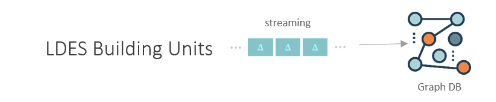
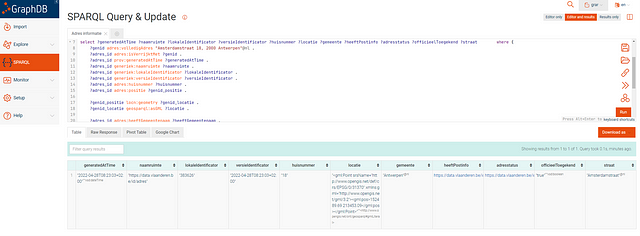

Quick start
LDES Server & LDES Client
This example focuses on both publishing and consuming a Linked Data Event Stream (LDES). We start by explaining how to setup an LDES server and publish data as an LDES, followed by the setup of the LDES client to replicate an LDES. In this example, the data examples are described with OSLO (the Flemish Interoperability Program) ontologies.
The files you will use for this quick start guide is available here
This quick start example demonstrates only a small amount of the capabilities of the LDES Server. For more information about the LDES server, please consult the LDES Server Manual.
Before starting
- Make sure Docker has been installed on your device.
- Local Ports 8080, and 27017 are accessible.
- The command script is written in bash code. Please modify it accordingly.
Setup an LDES Server
To start a default LDES Server, a few basic steps are needed.
-
Create a
ldes-server.ymlconfig file with this basic contentmongock: migration-scan-package: VSDS springdoc: swagger-ui: path: /v1/swagger ldes-server: host-name: "http://localhost:8080" management: tracing: enabled: false spring: data: mongodb: database: ldes host: ldes-mongodb port: 27017 auto-index-creation: true -
Create a local
docker-compose.ymlfile with the content below.version: "3.3" services: ldes-server: container_name: basic_ldes-server image: ldes/ldes-server:1.0.0-SNAPSHOT environment: - SPRING_CONFIG_LOCATION=/config/ volumes: - ./ldes-server.yml:/config/application.yml:ro ports: - 8080:8080 networks: - ldes depends_on: - ldes-mongodb ldes-mongodb: container_name: quick_start_ldes-mongodb image: mongo:6.0.4 ports: - 27017:27017 networks: - ldes ldio-workbench: container_name: basic_ldes-replication image: ldes/ldi-orchestrator:1.0.0-SNAPSHOT environment: - SPRING_CONFIG_NAME=application - SPRING_CONFIG_LOCATION=/config/ volumes: - ./ldio.yml:/config/application.yml:ro ports: - ${LDIO_WORKBENCH_PORT:-8081}:8080 networks: - ldes profiles: - delay-started networks: ldes: name: quick_start_network - Run
docker compose upwithin the work directory of.ymlfile, to start the containers. - The LDES Server is now available at port
8080and accepts members viaHTTP POSTrequests. -
We will now configure the LDES Server. (note that this part can also be done with the Swagger endpoint (
/v1/swagger), where more detailed documentation is available) - Let’s set the DCAT metadata for the server by defining a title and a description:
curl -X 'POST' \
'http://localhost:8080/admin/api/v1/dcat' \
-H 'accept: text/plain' \
-H 'Content-Type: text/turtle' \
---data-raw ' @prefix dct: <http://purl.org/dc/terms/> .
@prefix dcat: <http://www.w3.org/ns/dcat#> .
[] a dcat:Catalog ;
dct:title "My LDES'\''es"@en ;
dct:description "All LDES'\''es from publiser X"@en .
'
-
Next, let’s add collection for our mobility hindrances. This will be used to replicate the dataset from GIPOD:
- A collection name “mobility-hindrances”
- Will process members of type “https://data.vlaanderen.be/ns/mobiliteit#Mobiliteitshinder”
- Will have 2 views :
- A default view, which provides a basic view using a paginated fragmention. This also enables snapshotting. (this view is called
by-pageby default) - A time-based fragmented view. This will fragment the members based on their timebased property. This value is by default set to
http://www.w3.org/ns/prov#generatedAtTime
- A default view, which provides a basic view using a paginated fragmention. This also enables snapshotting. (this view is called
curl -X 'PUT' 'http://localhost:8080/admin/api/v1/eventstreams' \ -H 'accept: text/turtle' \ -H 'Content-Type: text/turtle' \ --data-raw '@prefix ldes: <https://w3id.org/ldes#> . @prefix dcterms: <http://purl.org/dc/terms/> . @prefix tree: <https://w3id.org/tree#>. @prefix sh: <http://www.w3.org/ns/shacl#> . @prefix xsd: <http://www.w3.org/2001/XMLSchema#> . @prefix example: <http://example.org/> . @prefix collection: </mobility-hindrances/> . </mobility-hindrances> a ldes:EventStream ; ldes:timestampPath dcterms:created ; ldes:versionOfPath dcterms:isVersionOf ; example:memberType <https://data.vlaanderen.be/ns/mobiliteit#Mobiliteitshinder> ; example:hasDefaultView "true"^^xsd:boolean ; ldes:view collection:time-based ; tree:shape [ a sh:NodeShape ; ] . collection:time-based tree:viewDescription [ ldes:retentionPolicy [ a ldes:DurationAgoPolicy ; tree:value "PT2M"^^xsd:duration ; ] ; tree:fragmentationStrategy ([ a tree:Fragmentation ; tree:name "timebased" ; tree:memberLimit "20" ; ]) ; ] . ' -
Let’s add some DCAT metadata for this collection:
- We define an English and Dutch title and description
- We define the creator of the collection to be http://sample.org/company/MyDataOwner
curl -X 'POST' \ 'http://localhost:8080/admin/api/v1/eventstreams/mobility-hindrances/dcat' \ -H 'accept: */*' \ -H 'Content-Type: text/turtle' \ -d ' @prefix dcat: <http://www.w3.org/ns/dcat#> . @prefix dct: <http://purl.org/dc/terms/> . [] a dcat:Dataset ; dct:title "Mobility Hindrances Collection"@en ; dct:title "Mobiliteitshindernissen collectie"@nl ; dct:description "A collection containing mobility hindrances"@en ; dct:description "Een collectie met Mobiliteitshindernissen"@nl ; dct:creator <http://sample.org/company/MyDataOwner> ;' -
We’ll now also set the DCAT metadata for the time-based view by defining a title and a description :
curl -X 'POST' \ 'http://localhost:8080/admin/api/v1/eventstreams/mobility-hindrances/views/time-based/dcat' \ -H 'accept: */*' \ -H 'Content-Type: text/turtle' \ -d '@prefix dct: <http://purl.org/dc/terms/> . @prefix dcat: <http://www.w3.org/ns/dcat#> . [] a dcat:DataService ; dct:title "My timebased view"@en ; dct:description "Timebased fragmentation for the mobility-hindrances "@en . ' -
Next, let’s add a second collection to collect observations:
- A collection name “observations”
- Will process members of type “https://data.vlaanderen.be/ns/mobiliteit#ObservationCollection”
- Will have a default view, which provides a basic view using a paginated fragmention. This also enables snapshotting.
curl -X 'PUT' 'http://localhost:8080/admin/api/v1/eventstreams' \ -H 'accept: text/turtle' \ -H 'Content-Type: text/turtle' \ --data-raw '@prefix ldes: <https://w3id.org/ldes#> . @prefix example: <http://example.org/> . @prefix dcterms: <http://purl.org/dc/terms/> . @prefix tree: <https://w3id.org/tree#>. @prefix sh: <http://www.w3.org/ns/shacl#> . @prefix server: <http://localhost:8080/> . @prefix xsd: <http://www.w3.org/2001/XMLSchema#> . server:observations a ldes:EventStream ; ldes:timestampPath dcterms:created ; ldes:versionOfPath dcterms:isVersionOf ; example:memberType <https://data.vlaanderen.be/ns/mobiliteit#ObservationCollection> ; example:hasDefaultView "true"^^xsd:boolean ; tree:shape [ a sh:NodeShape ; ] . '
Add data to the LDES Server
-
Create a
observation.ttlfile with the following content:@prefix dc: <http://purl.org/dc/terms/> . @prefix prov: <http://www.w3.org/ns/prov#> . @prefix xsd: <http://www.w3.org/2001/XMLSchema#> . @prefix sosa: <http://www.w3.org/ns/sosa/> . @prefix ns0: <http://def.isotc211.org/iso19156/2011/SamplingFeature#SF_SamplingFeatureCollection.> . @prefix ns1: <http://def.isotc211.org/iso19156/2011/Observation#OM_Observation.> . @prefix ns2: <http://def.isotc211.org/iso19103/2005/UnitsOfMeasure#Measure.> . @prefix ns3: <https://schema.org/> . <urn:ngsi-ld:WaterQualityObserved:woq:1/2023-03-12T18:31:17.003Z> dc:isVersionOf <urn:ngsi-ld:WaterQualityObserved:woq:1> ; prov:generatedAtTime "2023-03-12T18:31:17.003Z"^^xsd:dateTime ; sosa:hasFeatureOfInterest "spt-00035-79" ; ns0:member <https://data.vmm.be/id/loc-00019-33>, [ sosa:madeBySensor <urn:ngsi-v2:cot-imec-be:Device:imec-iow-UR5gEycRuaafxnhvjd9jnU> ; ns1:result [ ns2:value [ ns3:value 2.043000e+1 ; ns3:unitCode <https://data.vmm.be/id/CEL> ] ] ; ns1:phenomenonTime "2023-03-12T18:31:17.003Z"^^xsd:datetime ; ns1:observedProperty <https://data.vmm.be/concept/waterkwaliteitparameter/temperatuur> ; ns1:featureOfInterest <https://data.vmm.be/id/spt-00035-79> ; a <http://def.isotc211.org/iso19156/2011/Measurement#OM_Measurement> ], [ sosa:madeBySensor <urn:ngsi-v2:cot-imec-be:Device:imec-iow-UR5gEycRuaafxnhvjd9jnU> ; ns1:result [ ns2:value [ ns3:value 1442 ; ns3:unitCode <https://data.vmm.be/id/HP> ] ] ; ns1:phenomenonTime "2023-03-12T18:31:17.003Z"^^xsd:datetime ; ns1:observedProperty <https://data.vmm.be/concept/observatieparameter/hydrostatische-druk> ; ns1:featureOfInterest <https://data.vmm.be/id/spt-00035-79> ; a <http://def.isotc211.org/iso19156/2011/Measurement#OM_Measurement> ], [ sosa:madeBySensor <urn:ngsi-v2:cot-imec-be:Device:imec-iow-UR5gEycRuaafxnhvjd9jnU> ; ns1:result [ ns2:value [ ns3:value 6150 ; ns3:unitCode <https://data.vmm.be/id/G42> ] ] ; ns1:phenomenonTime "2023-03-12T18:31:17.003Z"^^xsd:datetime ; ns1:observedProperty <https://data.vmm.be/concept/waterkwaliteitparameter/conductiviteit> ; ns1:featureOfInterest <https://data.vmm.be/id/spt-00035-79> ; a <http://def.isotc211.org/iso19156/2011/Measurement#OM_Measurement> ] ; a <https://data.vlaanderen.be/ns/mobiliteit#ObservationCollection> . <https://data.vmm.be/id/loc-00019-33> a <http://def.isotc211.org/iso19156/2011/SpatialSamplingFeature#SF_SpatialSamplingFeature> . -
Run the following command to post the
observation.ttlto the LDES Server.curl -X POST http://localhost:8080/observations -H "Content-Type: application/ttl" -d "@observation.ttl"
Replicating an LDES using the LDES Client
-
Create a
ldio.ymlfile in the same directory as yourdocker-compose.ymlwith the following content:orchestrator: pipelines: - name: gipod-replicator description: "HTTP polling, OSLO transformation, version creation & HTTP sending." input: name: be.vlaanderen.informatievlaanderen.ldes.ldi.client.LdioLdesClient config: url: https://private-api.gipod.vlaanderen.be/api/v1/ldes/mobility-hindrances outputs: - name: be.vlaanderen.informatievlaanderen.ldes.ldio.LdioHttpOut config: endpoint: http://host.docker.internal:8080/mobility-hindrances content-type: application/n-quads -
Execute the following command to start up the LDIO
docker compose up ldio-workbench -d -
Validate your LDES server is being populated by going to
http://localhost:8080/mobility-hindrances/by-page?pageNumber=1andhttp://localhost:8080/mobility-hindrances/time-based. These streams should fill up as the LDES Client send members to your server.
Tear down the infrastructure and remove the volumes
- Within the working directory, please run
docker rm -f $(docker ps -a -q)
LDES2Service
***Please Note!***
_The purpose of the quick start try-out is solely to create _[Pagination fragmentation](https://github.com/Informatievlaanderen/VSDS-LDESServer4J/tree/main/ldes-fragmentisers/ldes-fragmentisers-pagination)_ for the self-generated data type to _[LDES format](https://semiceu.github.io/LinkedDataEventStreams/)_. To support other fragments, data types, or other features, e.g., retention, caching, etc., please consult _[LDES Server Manual](https://github.com/Informatievlaanderen/VSDS-LDESServer4J)_ for the configurations._
[Vlaamse Smart Data Space](https://www.vlaanderen.be/digitaal-vlaanderen/onze-oplossingen/vlaamse-smart-data-space)_ projects also provide methods for transforming data to *[LDES format](https://semiceu.github.io/LinkedDataEventStreams/)_, e.g. from _[NGSI-V2](https://vloca-kennishub.vlaanderen.be/NGSI-v2)* to *[NGSI-LD](https://en.wikipedia.org/wiki/NGSI-LD)_, from NGSI to _[OSLO](https://www.vlaanderen.be/digitaal-vlaanderen/onze-oplossingen/oslo)_ Model, from _[NGSI-V2](https://vloca-kennishub.vlaanderen.be/NGSI-v2)_ to _[LDES (LinkedDataEventStreams)](https://semiceu.github.io/LinkedDataEventStreams/).
Having trouble implementing this example? Please post your issue on the [VSDS Tech docs repo](https://github.com/Informatievlaanderen/VSDS-Tech-Docs/issues).
In this short example below, we show you how the components of the VSDS can be used to link multiple data streams across domains and systems using LDES. The whole story can be read here: Real-Time Data Linkage via Linked Data Event Streams
Before starting
- Docker has been installed on your device.
- Local Ports 8443 and 7200 are accessible.
Start your LDES workbench
- Create a local docker-compose.yml file with the following content, or you could use the current good-to-go GetStarted GRAR project:
version: ‘3’
volumes:
nifi-database-repository:
nifi-flowfile-repository:
nifi-content-repository:
nifi-provenance-repository:
nifi-state:
nifi-logs:
nifi-nars:
nifi-conf:
networks:
front-tier:
driver: bridge
back-tier:
driver: bridge
services:
nifi:
image: ghcr.io/informatievlaanderen/ldes-workbench-nifi:20230214T123440 #20221109T103745
container_name: nifi-graph
restart: unless-stopped
ports:
# HTTPS
- 8443:8443/tcp
volumes:
- ./nifi-extensions:/opt/nifi/nifi-current/extensions
environment:
- NIFI_UI_PORT=8443
- SINGLE_USER_CREDENTIALS_USERNAME=admin
- SINGLE_USER_CREDENTIALS_PASSWORD=admin123456789
- NIFI_WORKFLOW_LISTEN_PORT=9005
- NIFI_JVM_HEAP_INIT=8g
- NIFI_JVM_HEAP_MAX=8g
graphdb:
image: ontotext/graphdb:10.0.2
container_name: graphdb3
ports:
# HTTP
- 7200:7200
To begin, the command for launching GraphDb and Apache NiFi within a docker container is as follows:
docker compose up --build
Apache Nifi runs on port 8443:8443/tcp :https://localhost:8443
GraphDB runs on port 7200 :7200/tcp : http://localhost:7200
A data flow can be built up by dragging in building blocks in the graphical user interface of Apache NiFi. This docker container contains all the components out the latest version of the LDES workbench (e.g., latest LDES Client, LDES server, etc.). Every data stream can be transformed into a Linked Data Event Stream with a conversion data flow.
Starting from a published LDES
In this example, we start from published LDES
@prefix conceptscheme: <https://data.vlaanderen.be/id/conceptscheme/> .
@prefix generiek: <https://data.vlaanderen.be/ns/generiek#> .
@prefix geosparql: <http://www.opengis.net/ont/geosparql#> .
@prefix ldes: <https://w3id.org/ldes#> .
@prefix locn: <https://www.w3.org/ns/locn#> .
@prefix prov: <http://www.w3.org/ns/prov#> .
@prefix rdf: <http://www.w3.org/1999/02/22-rdf-syntax-ns#> .
@prefix relation: <http://www.iana.org/assignments/relation/> .
@prefix terms: <http://purl.org/dc/terms/> .
@prefix tree: <https://w3id.org/tree#> .
https://data.vlaanderen.be/id/adres/1658513
relation:self "https://api.basisregisters.staging-vlaanderen.be/v2/adressen/1658513" .
[ https://data.vlaanderen.be/ns/gebouw#bestaatUit
<https://data.vlaanderen.be/id/gebouweenheid/17631816/2022-06-27T16:23:49+02:00> ;
generiek:lokaleIdentificator "17631524"] .
[ https://data.vlaanderen.be/ns/gebouw#bestaatUit
<https://data.vlaanderen.be/id/gebouweenheid/6311633/2022-06-27T16:23:48+02:00> ; generiek:lokaleIdentificator "6310652"] .
https://data.vlaanderen.be/id/gebouweenheid/14539518/2022-06-27T16:23:32+02:00
rdf:type <https://data.vlaanderen.be/ns/gebouw#Gebouweenheid> ;
terms:isVersionOf <https://data.vlaanderen.be/id/gebouweenheid/14539518> ; prov:generatedAtTime "2022-06-27T16:23:32+02:00"^^<http://www.w3.org/2001/XMLSchema#dateTime> ;
<https://data.vlaanderen.be/ns/gebouw#Gebouweenheid.adres> <https://data.vlaanderen.be/id/adres/5162364> ; <https://data.vlaanderen.be/ns/gebouw#Gebouweenheid.geometrie>
[ conceptscheme:geometriemethode conceptscheme:aangeduidDoorBeheerder ; locn:geometry [ geosparql:asGML "<gml:Point srsName=\"http://www.opengis.net/def/crs/EPSG/0/31370\" xmlns:gml=\"http://www.opengis.net/gml/3.2\"><gml:pos>200647.71 210393.46</gml:pos></gml:Point>"^^geosparql:gmlLiteral ] ] ; <https://data.vlaanderen.be/ns/gebouw#Gebouweenheid.status>
conceptscheme:gerealiseerd ; <https://data.vlaanderen.be/ns/gebouw#functie> conceptscheme:nietGekend ;
generiek:lokaleIdentificator "14539518" ; generiek:naamruimte "https://data.vlaanderen.be/id/gebouweenheid" ; generiek:versieIdentificator "2022-06-27T16:23:32+02:00" .
<https://data.vlaanderen.be/id/adres/2213034> relation:self "https://api.basisregisters.staging-vlaanderen.be/v2/adressen/2213034" .
Consuming an LDES
For this purpose, the three Linked Data Event streams are stored in a GraphDB to facilitate efficient and effective data consumption. GraphDB supports complex semantic queries and inference, making discovering meaningful relationships between different data sources possible.

-
Start Apache NiFi on localhost:8433
-
Import data flow by importing Apache NiFi configuration file. See this site for more info
-
Add LDES endpoint in the LDES client
-
Start Apache NiFi data flow

-
Open GraphDB on localhost:7200/sparql
-
Run a semantic query with SPARQL

Below you find an example of a SPARQL query. This query returns triples with information about the parcel LDES.
PREFIX adres: <https://data.vlaanderen.be/id/adres/>
PREFIX gebouw: <https://data.vlaanderen.be/id/?gebouweenheid/>
PREFIX gebouweenheid: <https://data.vlaanderen.be/ns/gebouw#>
PREFIX prov: <http://www.w3.org/ns/prov#>
PREFIX generiek: <https://data.vlaanderen.be/ns/generiek#>
PREFIX rdf: <http://www.w3.org/1999/02/22-rdf-syntax-ns#>
construct {
?gebouweenheid prov:generatedAtTime ?generatedAtTime .
?gebouweenheid rdf:type ?type .?gebouweenheid gebouweenheid:Gebouweenheid.geometrie ?geometrie .
?gebouweenheid gebouweenheid:Gebouweenheid.status ?status .
?gebouweenheid gebouweenheid:functie ?functie .
?gebouweenheid generiek:lokaleIdentificator ?lokaleIdentificator .
?gebouweenheid generiek:naamruimte ?naamruimte .
?gebouweenheid generiek:versieIdentificator ?versieIdentificator .
} where {
?gebouweenheid <https://data.vlaanderen.be/ns/gebouw#Gebouweenheid.adres> <https://data.vlaanderen.be/id/adres/1864311> .
OPTIONAL{
?gebouweenheid prov:generatedAtTime ?generatedAtTime .
?gebouweenheid rdf:type ?type .
?gebouweenheid gebouweenheid:Gebouweenheid.geometrie ?geometrie .
?gebouweenheid gebouweenheid:Gebouweenheid.status ?status .
?gebouweenheid gebouweenheid:functie ?functie .
?gebouweenheid generiek:lokaleIdentificator ?lokaleIdentificator .
?gebouweenheid generiek:naamruimte ?naamruimte .
?gebouweenheid generiek:versieIdentificator ?versieIdentificator .
}}
This SPARQL query returns multiple triples with information about building units. These triples can then be converted into an RDF file.
The RDF file should be as follow:
@prefix ns1: <https://data.vlaanderen.be/ns/generiek#> .
@prefix ns2: <https://data.vlaanderen.be/ns/gebouw#> .
@prefix ns3: <http://www.w3.org/ns/prov#> .
@prefix xsd: <http://www.w3.org/2001/XMLSchema#> .
<https://data.vlaanderen.be/id/gebouweenheid/14635685> a ns2:Gebouweenheid ;
ns3:generatedAtTime "2022-06-27T20:51:02+02:00"^^xsd:dateTime ; ns2:Gebouweenheid.geometrie [ ] ; ns2:Gebouweenheid.status <https://data.vlaanderen.be/id/conceptscheme/gerealiseerd> ;
ns2:functie <https://data.vlaanderen.be/id/conceptscheme/nietGekend> ; ns1:lokaleIdentificator "14635685" ;
ns1:naamruimte "https://data.vlaanderen.be/id/gebouweenheid" ; ns1:versieIdentificator "2022-06-27T20:51:02+02:00" .